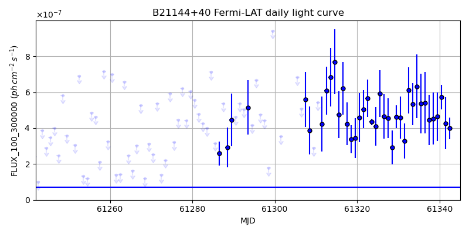
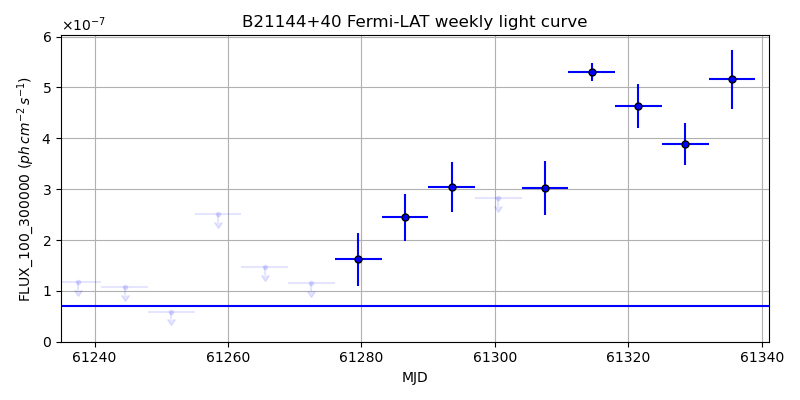
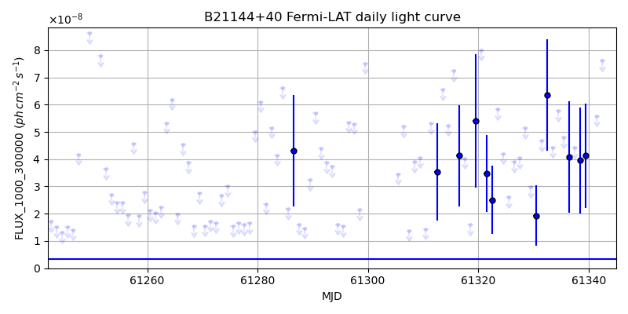
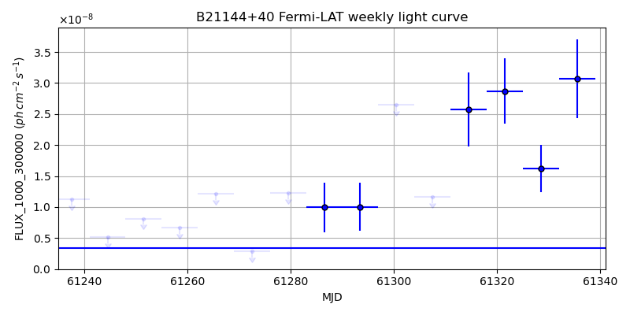

LAT Lightcurve site: https://fermi.gsfc.nasa.gov/ssc/data/access/lat/msl_lc/source/B2_1144p40
NED: Query
Time of last update of this page: UT: 2026-10-30 15:23 (MJD: 61343.641)
| Property | Value |
|---|---|
| R.A. | 11:46:58.32 |
| Dec. | 39:58:33.6 |
| z | 1.088 |
| 3FGL SpectrumType | PowerLaw |
| 3FGL PL Index | 2.32 |
| 3FGL Flux_100_300000 | 7.00e-08 1 / (s cm2) |
| 3FGL Flux_1000_300000 | 3.34e-09 1 / (s cm2) |
| 3FGL Flux >200 GeV | 3.05e-12 1 / (s cm2) |
| 3FGL Extrap. Crab >200 GeV | 0.01 |
| 3FGL Flux After EBL Absorption >200GeV | 3.00e-14 1 / (s cm2) |
| 3FGL EBL Crab Fraction >200GeV | 0.00 |

| MJD | dMJD | Flux | dFlux | Frac3FGL | FracCrab>200GeV | EBLFracCrab>200GeV |
|---|---|---|---|---|---|---|
| 61338.50 | 0.50 | 4.52e-07 | 1.45e-07 | 6.47 | 0.08 | 0.00 |
| 61339.50 | 0.50 | 4.64e-07 | 1.34e-07 | 6.63 | 0.09 | 0.00 |
| 61340.50 | 0.50 | 5.73e-07 | 6.98e-08 | 8.19 | 0.11 | 0.00 |
| 61341.50 | 0.50 | 4.27e-07 | 1.45e-07 | 6.11 | 0.08 | 0.00 |
| 61342.50 | 0.50 | 4.00e-07 | 6.02e-08 | 5.72 | 0.07 | 0.00 |

| MJD | dMJD | Flux | dFlux | Frac3FGL | FracCrab>200GeV | EBLFracCrab>200GeV |
|---|---|---|---|---|---|---|
| 61307.50 | 3.50 | 3.02e-07 | 5.30e-08 | 4.32 | 0.06 | 0.00 |
| 61314.50 | 3.50 | 5.31e-07 | 1.77e-08 | 7.59 | 0.10 | 0.00 |
| 61321.50 | 3.50 | 4.63e-07 | 4.31e-08 | 6.62 | 0.09 | 0.00 |
| 61328.50 | 3.50 | 3.89e-07 | 4.13e-08 | 5.56 | 0.07 | 0.00 |
| 61335.50 | 3.50 | 5.16e-07 | 5.78e-08 | 7.38 | 0.10 | 0.00 |

| MJD | dMJD | Flux | dFlux | Frac3FGL | FracCrab>200GeV | EBLFracCrab>200GeV |
|---|---|---|---|---|---|---|
| 61338.50 | 0.50 | 3.95e-08 | 1.95e-08 | 11.86 | 0.15 | 0.00 |
| 61339.50 | 0.50 | 4.13e-08 | 1.91e-08 | 12.40 | 0.16 | 0.00 |
| 61340.50 | 0.50 | 9.18e-08 | 0.00e+00 | 0.00 | 0.00 | 0.00 |
| 61341.50 | 0.50 | 5.59e-08 | 0.00e+00 | 0.00 | 0.00 | 0.00 |
| 61342.50 | 0.50 | 7.62e-08 | 0.00e+00 | 0.00 | 0.00 | 0.00 |

| MJD | dMJD | Flux | dFlux | Frac3FGL | FracCrab>200GeV | EBLFracCrab>200GeV |
|---|---|---|---|---|---|---|
| 61307.50 | 3.50 | 1.16e-08 | 0.00e+00 | 0.00 | 0.00 | 0.00 |
| 61314.50 | 3.50 | 2.58e-08 | 5.98e-09 | 7.73 | 0.10 | 0.00 |
| 61321.50 | 3.50 | 2.87e-08 | 5.27e-09 | 8.61 | 0.11 | 0.00 |
| 61328.50 | 3.50 | 1.62e-08 | 3.75e-09 | 4.87 | 0.06 | 0.00 |
| 61335.50 | 3.50 | 3.07e-08 | 6.36e-09 | 9.21 | 0.12 | 0.00 |
--------------------------------------------------------- Using user-supplied coords: 11:46:58.32 39:58:33.6 2000 --------------------------------------------------------- FLWO UT night of: 2026-10-31 Local Sid. @ Midnight: 02:14 Sunset (-15.0) (local, UT): 18:44 01:44 Sunrise (-15.0) (local, UT): 05:31 12:31 Moonrise (local, UT): 21:49 04:49 Moonset (local, UT): Moon phase: 0.68 --------------------------------------------------------- AzTime LSID UT Obj_el Obj_az Mn_el Mn_az Sep. --------------------------------------------------------- 18:44 20:57 01:44 -8.3 328.3 -27.0 28.6 59.8 19:14 21:27 02:14 -11.4 333.2 -23.9 34.8 59.5 19:44 21:57 02:44 -14.1 338.5 -20.2 40.4 59.2 20:14 22:27 03:14 -16.1 344.1 -16.1 45.6 58.9 20:44 22:58 03:44 -17.6 349.9 -11.6 50.4 58.6 21:14 23:28 04:14 -18.3 355.9 -6.7 54.8 58.4 21:44 23:58 04:44 -18.5 2.0 -0.9 58.8 58.1 22:14 00:28 05:14 -17.9 8.0 3.8 62.5 57.8 22:44 00:58 05:44 -16.7 14.0 9.2 66.0 57.6 23:14 01:28 06:14 -14.8 19.6 14.8 69.3 57.3 23:44 01:58 06:44 -12.4 25.0 20.6 72.5 57.1 00:14 02:28 07:14 -9.4 30.1 26.5 75.5 56.9 00:44 02:58 07:44 -5.8 34.8 32.5 78.6 56.7 01:14 03:28 08:14 -1.2 39.1 38.5 81.7 56.5 01:44 03:58 08:44 2.3 43.0 44.7 84.9 56.3 02:14 04:28 09:14 6.7 46.6 50.8 88.3 56.1 02:44 04:59 09:44 11.4 49.9 57.0 92.2 56.0 03:14 05:29 10:14 16.4 52.9 63.2 97.0 55.8 03:44 05:59 10:44 21.6 55.6 69.3 103.5 55.7 04:14 06:29 11:14 26.9 57.9 75.2 113.7 55.5 04:44 06:59 11:44 32.4 60.0 80.4 133.8 55.4 05:14 07:29 12:14 38.0 61.8 83.0 177.6 55.3 05:31 07:46 12:31 41.2 62.6 82.2 206.9 55.2 --------------------------------------------------------- Dark hours >55 deg.: 0.00